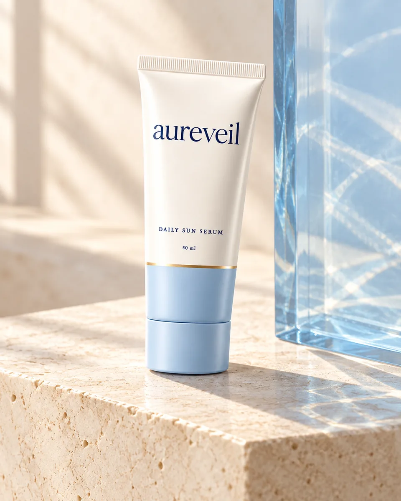
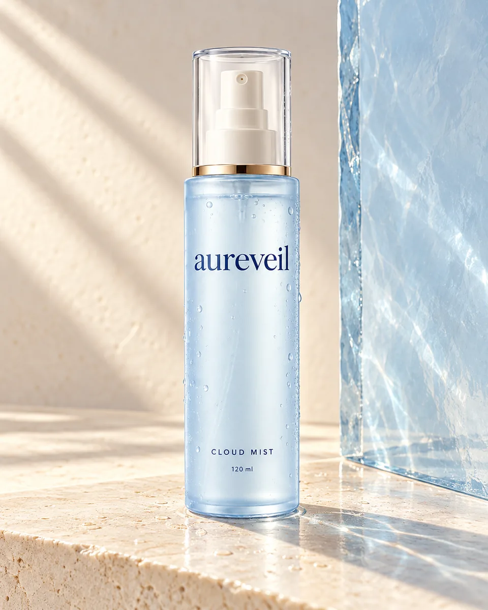
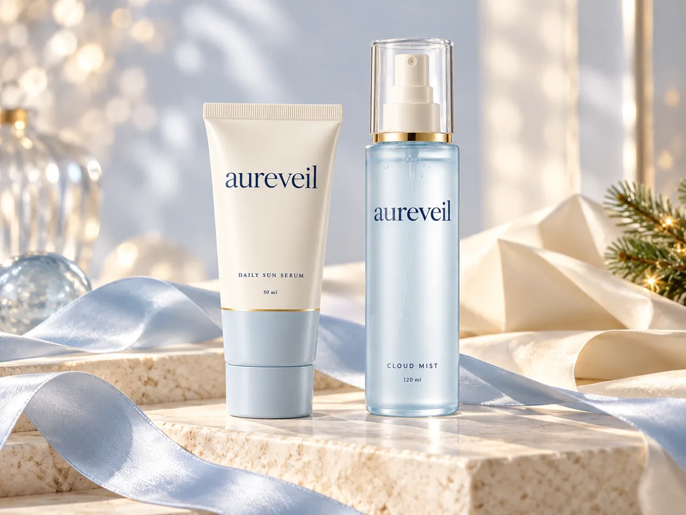

YesStyle Awards · 2026
1st place
Favorite Sun Care
Explore the recognitionLightweight sunscreen. Everyday care.
A lightweight SPF50+ PA++++ sunscreen for daily UV protection.
Comfortable hydration for full days in Singapore.
Fine lines or dark spots showing up sooner than you expected? Start with a daily step that fits your morning.
DAILY SUN SERUM SPF50+ PA++++ · 50ml

Recognised. Loved. Reached for.
Recognition for the original Water-Fit Sun Serum available through our sunscreen product link.
YesStyle Awards · 2026
Favorite Sun Care
Explore the recognitionYesStyle Awards · 2026
Viral Korean Beauty Product
Explore the recognitionOlive Young Awards · 2025
Global Trend
Explore the recognitionDaily sunscreen. Published evidence.
Daily sunscreen helps protect against premature skin aging caused by UV exposure. Here is what the research measured.
24%
Daily versus discretionary sunscreen use over 4.5 years.
Published daily-sunscreen research: 903 Australian adults under 55, followed for 4.5 years. Researchers assessed skin-aging progression on the back of the hand.
Easily absorbed & leaves my skin hydrated with dewy finish.traveller2021 · 12 February 2023 · Shopee review excerpt. Read customer experiences.
Randhawa et al., 2016: study details (opens in a new tab)
Explore feel, finish and researchWHAT THE TESTING MEANS FOR YOU
Choose with a clearer idea of what the formula brings to your routine:
Reported SPF 50.5 ± 7.1 · PFA 16.56 ± 2.69 · manufacturer-published studies · individual responses vary. Study details & sources.
At least 1 teaspoonfor the face, per current AAD guidance
15 minutes before outdoorsapply before sun exposure
Every 2 hours outdoorsreapply, and after swimming or sweating
Before sunscreen: preparation, amount and order AAD application guidance (opens in a new tab)
New to sunscreen? Start here.
Does sunscreen prevent wrinkles? What does SPF50 mean, and how does it compare with SPF100? Explore the answers before choosing your daily essential.
A little clarity, at your pace
The daily edit
Daily sunscreen for UV protection.
Hydrating facial mist for a refreshing reset.
 The daily essential
The daily essentialAUREVEIL · 50ml · SPF50+ PA++++
A lightweight daily sunscreen with a fresh, dewy finish.


The little resetAUREVEIL · 120ml · Facial mist
A hydrating facial mist for a refreshing, dewy feel.
For the life you are living
Early meetings. Late trains. Air-conditioned afternoons. A calendar that somehow fills itself.
Aureveil pairs daily sunscreen with comfortable hydration for full lives. Consistent sun protection helps prevent premature skin aging caused by UV exposure, without turning your routine into another to-do list.
Our approach to everyday careTWO LITTLEdailyBetter as a ritual
Daily sun protection meets a fresh cloud of hydration. Two complementary essentials, thoughtfully paired for your full, beautifully busy life.
Individual total S$99.80

The Christmas edit · 2026
For the friend who does everything. For the person who deserves a pause. Give a little everyday care this Christmas.
Thoughtful gifts from S$39.90
Discover the gift editBefore you choose
AAD sunscreen guidance (opens in a new tab) · Explore all frequently asked questions
Care, made clearer
A moment, just for you
A few simple questions. A thoughtful place to start.
Find my daily ritualIn their own words
Selected Sun Serum and Cloud Mist review excerpts from Shopee.
DAILY SUN SERUM · SHOPEE REVIEW
View reviews on Shopee (opens Daily Sun Serum reviews in a new tab)“Easily absorbed & leaves my skin hydrated with dewy finish.”
DAILY SUN SERUM · SHOPEE REVIEW
View reviews on Shopee (opens Daily Sun Serum reviews in a new tab)“Super nice lightweight sunscreen!! Rubs in effortlessly and doesn't leave any white cast, not too greasy as well!”
CLOUD MIST · SHOPEE REVIEW
View reviews on Shopee (opens Cloud Mist reviews in a new tab)“Mist is very fine, each spray amount is perfect and ample (very satisfying).”
Excerpts from individual experiences. Skin preferences and results vary.
Explore more customer experiences